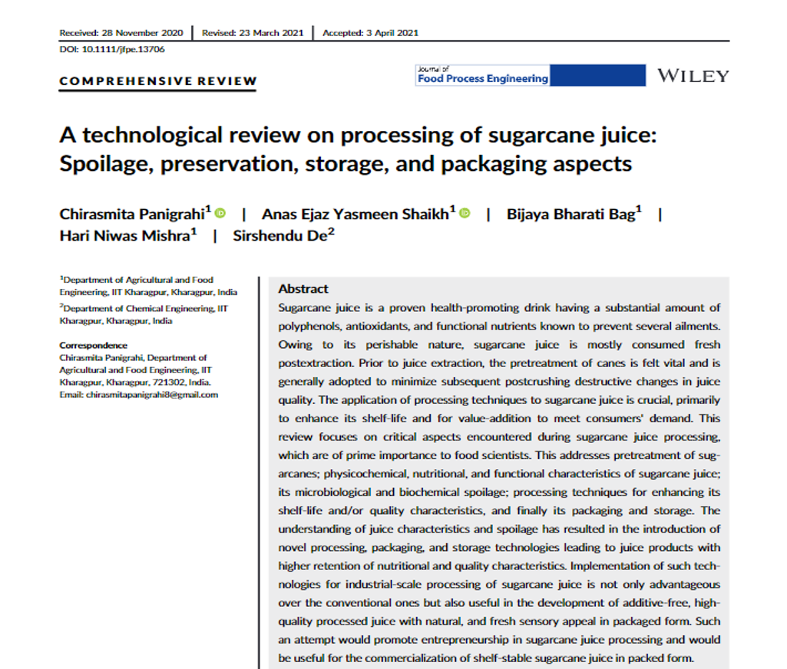
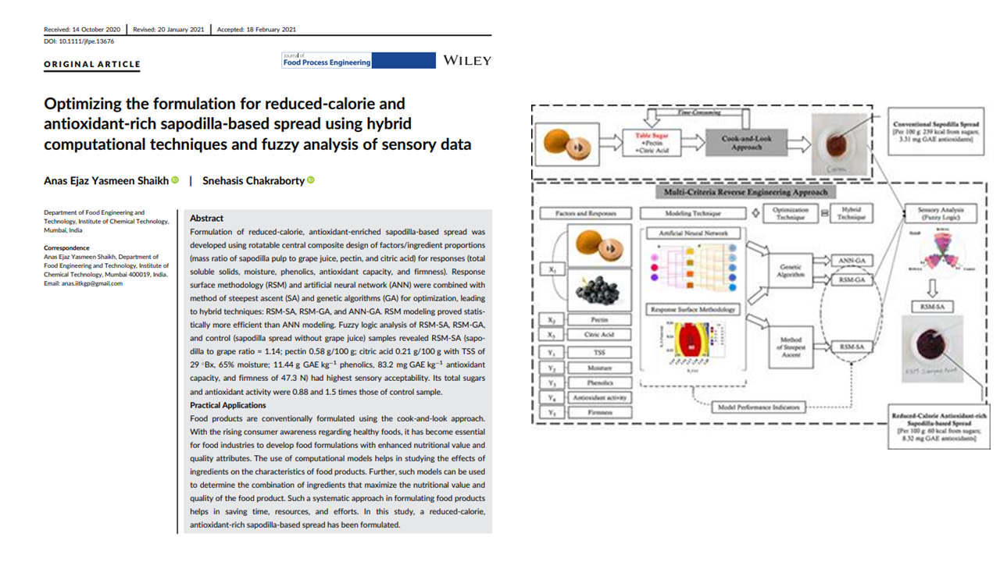
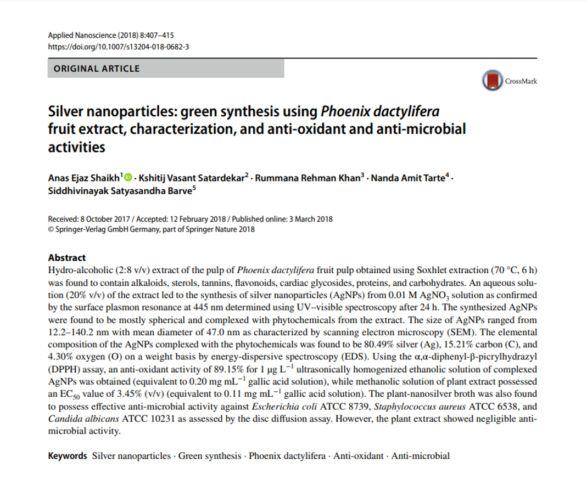
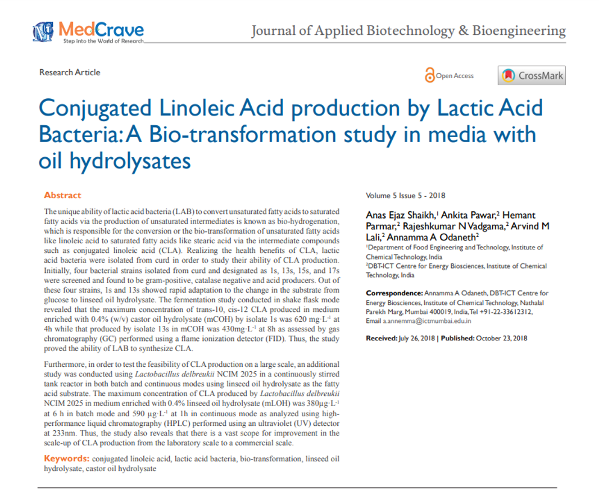

Shaikh, A.E.Y., and Mishra, HN. Electrohydrodynamic Drying: An Innovative Approach for Sustainable Food Processing. International Conference on Sustainable Approaches in Food Engineering and Technology (SAFETy). 2021
Panigrahi, C., Shaikh, A.E.Y. , Mishra, H.N., & De, S. (2021) A technological review on processing of sugarcane juice: Spoilage, preservation, storage, and packaging aspects. Journal of Food Process Engineering, e13706. https://doi.org/10.1111/jfpe.13706.
Shaikh, A.E.Y. & Chakraborty, S. (2021). Optimizing the formulation for reduced‐calorie and antioxidant‐rich sapodilla‐based spread using hybrid computational techniques and fuzzy analysis of sensory data. Journal of Food Process Engineering, e13676. https://doi.org/10.1111/jfpe.13676.
Shaikh, A.E., Satardekar, K.V., Khan, R.R., Tarte, N.A., & Barve, S.S. (2018). Silver nanoparticles: green synthesis using Phoenix dactylifera fruit extract, characterization, and anti-oxidant and anti-microbial activities. Applied Nanoscience, 8(3), 407-415. doi: 10.1007/s13204-018-0682-3
Shaikh, A.E., Pawar, A., Parmar, H., Vadgama, R.N., Lali, A.M., & Odaneth, A.A. (2018). Conjugated linoleic acid production by lactic acid bacteria: a bio-transformation study in media with oil hydrolysates. Journal of Applied Biotechnology and Bioengineering, 5(5), 321-327.
Bhave, P.A. & Shaikh, A.E. (2018, March). Blenders to improve line efficiency in dairy plant. Food Marketing and Technology. Retrieved from: http://fmtmagazine.in